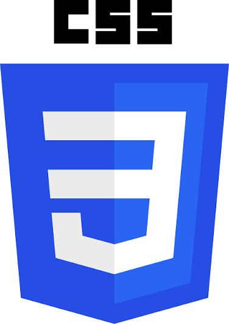
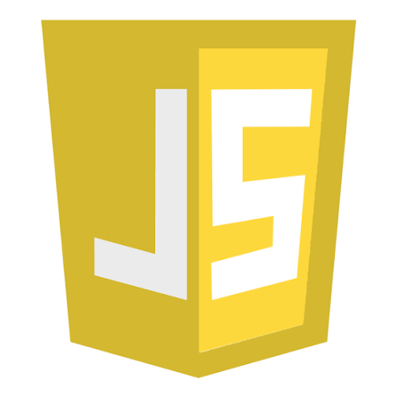

About Me
Hi! I'm Cyrus T. Pagayunan, a second-year Bachelor of Science in Information Technology (BSIT) student at the Technological University of the Philippines Taguig. This website was created as a major project for my Multimedia and Authoring class.
Rotoscoping & Video Editing
To bring my video and rotoscoping projects to life, I use a combination of creative tools. I rely on Adobe After Effects for the heavy lifting—like rotoscoping, animating, and final rendering. For quick and seamless lyrics editing, CapCut is my go-to application.

3D Solar System Project
For 3D modeling, I created a custom Solar System project. I used Blender to generate, build, and render the planets and the complete 3D space environment.

The Website Build
This website itself was built from the ground up using essential web development tools. I wrote the code using Visual Studio Code and published the final site via GitHub. The core structure is built with HTML, the visual design is styled with CSS, and the interactive elements—such as the custom calculator function—are powered by JavaScript.



